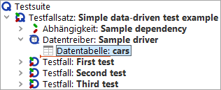
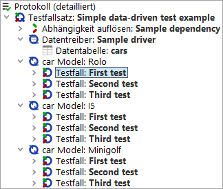
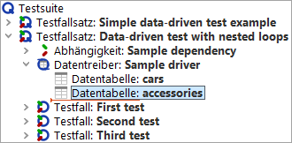
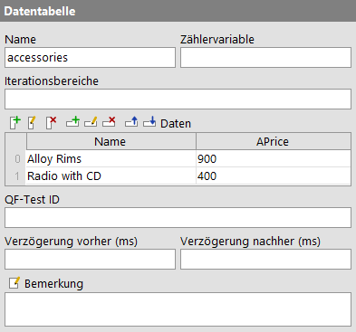
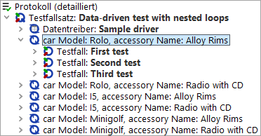

| Version 6.0.3 |
Datengetriebenes Testen ist ein sehr wichtiger Aspekt der Testautomatisierung. Das Ziel
besteht, kurz gesagt, darin, einen Testfall mehrfach mit dem selben Ablauf, aber
unterschiedlichen Eingabe- und Vergleichswerten durchzuführen. QF-Test bietet verschiedene
Möglichkeiten, um Daten für datengetriebene Tests abzulegen oder aus externen Quellen zu
laden. Die bequemste Variante basiert auf einem 'Datentreiber' Knoten, der die Umgebung zur
Iteration über die Datensätze bereitstellt, sowie ein oder mehrere 'Daten' Knoten,
welche die Variablen Werte für die Testdurchläufe liefern. Dabei gibt es in QF-Test keinen
'Daten' Knoten als solches. Er dient als Oberbegriff für spezielle Ausprägungen wie
eine 'Datentabelle' oder eine 'CSV Datei'. Das Ganze lässt sich am besten
anhand von Beispielen erläutern. Eine Demo-Testsuite mit einfachen und komplexeren
Beispielen finden Sie unter dem Namen datadriver.qft im Verzeichnis
doc/tutorial unterhalb des Wurzelverzeichnises von QF-Test.
Bitte beachten Sie, dass Sie veränderte Testsuiten am besten in einem projektspezifischen Ordner speichern.
|
|  | ||
|
| Abbildung 20.1: Ein einfacher datengetriebener Test | ||
Obige Abbildung zeigt einen 'Testfallsatz' mit einem 'Datentreiber' Knoten, der einen einzelnen 'Daten' Knoten in Form einer 'Datentabelle' enthält. Der Inhalt des 'Datentabelle' Knotens ist wie folgt:
|
|  |
||
|
| Abbildung 20.2: Beispiel einer 'Datentabelle' | ||
Wird der 'Testfallsatz' ausgeführt, iteriert er über die Zeilen der 'Datentabelle'. Für jeden der drei Iterationsschritte werden die Werte der entsprechenden Zeile der Tabelle an die Variablen mit dem Namen der jeweiligen Spalte gebunden. Im Beispiel ergibt das für den ersten Durchlauf die Bindungen "Model=Rolo", "Variant=None" und "Price=19000". Im zweiten Durchlauf ist dann "Model=I5", im dritten "Model=Minigolf". Bei jedem Durchgang werden alle 'Testfall' Childknoten des 'Testfallsatz' Knotens ausgeführt.
Die folgende Abbildung zeigt ein Protokoll für obigen 'Testfallsatz':
|
|  | ||
|
| Abbildung 20.3: Protokoll eines datengetriebenen Tests | ||
Im nächsten Beispiel sehen wir, dass datengetriebene Tests nicht auf eine einfache Schleife beschränkt sind:
|
|  | ||
|
| Abbildung 20.4: Datengetriebene Tests mit verschachtelten Schleifen | ||
Der 'Datentreiber' enthält nun eine zweite 'Datentabelle' mit folgendem Inhalt:
|
|  | ||
|
| Abbildung 20.5: Zweites Beispiel einer 'Datentabelle' | ||
Der 'Testfallsatz' wird nun insgesamt sechs Iterationen durchlaufen, da für jede der drei Iterationen der äußeren Schleife namens "cars" beide Iterationen der inneren Schleife namens "accessories" durchlaufen werden. Im folgenden Protokoll ist dies gut zu erkennen:
|
|  | ||
|
| Abbildung 20.6: Protokoll eines datengetriebenen Tests mit verschachtelten Schleifen | ||
Hinweis Die äußerst hilfreichen dynamisch generierten Namen der Schleifendurchgänge erhalten Sie, indem Sie das Attribut 'Name für Schleifendurchgang im Protokoll' des 'Datentreiber' Knotens auf den Wert "car Model: $(Model)" im ersten bzw. "car Model: $(Model), accessory Name: $(Accessory)" im zweiten Beispiel setzen. Wie Sie sehen, wird dieser Wert für jede Iteration individuell expandiert, so dass Sie auf die Variablen zugreifen können, die für die Iteration gebunden werden.
Wie im vorangehenden Beispiel erklärt, muss ein 'Datentreiber' Knoten in einen 'Testfallsatz' Knoten eingefügt werden, und zwar zwischen die optionalen 'Abhängigkeit' und 'Vorbereitung' Knoten. Wird der 'Testfallsatz' ausgeführt, führt er zunächst einen eventuell vorhandenen 'Datentreiber' Knoten aus. Der Inhalt des 'Datentreiber' Knotens ist nicht auf 'Datentabelle' und 'CSV Datei' beschränkt. Wie ein normaler 'Sequenz' Knoten kann der 'Datentreiber' jede Art von ausführbaren Knoten enthalten, um damit eventuelle Vorbereitungen durchzuführen, die zur Bereitstellung der Daten notwendig sind. Hierdurch ist es auch möglich, die 'Daten' Knoten mehrfach zu nutzen, indem diese einfach in eine 'Prozedur' gestellt werden, welche aus den 'Datentreiber' Knoten heraus aufgerufen wird.
Im Prinzip entspricht ein 'Daten' Knoten einer Schleife, bei der in jedem Durchgang verschiedene Werte an Variablen gebunden werden. Ein 'Daten' Knoten muss mit einem Namen im 'Datentreiber' Kontext eines 'Testfallsatzes' registriert werden. Dadurch kann die Schleife durch einen 'Break' Knoten mit dem gleichen Namen abgebrochen werden. Nachdem der 'Datentreiber' ausgeführt wurde, iteriert der 'Testfallsatz' über die dabei registrierten 'Daten' Schleifen.
Bei verschachtelten Schleifen wird der zuerst registrierte 'Daten' Knoten als äußerste Schleife ausgeführt. Seine Variablen werden zuerst gebunden und haben damit geringere Bindungskraft als die Variablen der inneren Schleife(n).
In der mitgelieferten Testsuite
doc/tutorial/datadriver.qft finden Sie Beispiele für die
Verwendung von CSV und Exceldateien.
Neben dem 'Datentabelle' Knoten gibt es verschiedene weitere Möglichkeiten, Daten in einem Datentreiber zu binden. Die Knoten 'Excel Datei', 'CSV Datei', 'Datenbank' und 'Datenschleife' werden alle ausführlich in Abschnitt 38.4 erläutert.
Außerdem können Daten durch Aufruf der 'Prozeduren'
qfs.databinder.bindList oder qfs.databinder.bindSets in der
Standardbibliothek qfs.qft gebunden werden. Als Parameter werden Listen oder
Sätze von Werten in Form von Texten übergeben, die aufgeteilt werden, um über die Werte
zu iterieren. Informationen zur Standardbibliothek finden Sie in Kapitel 8 des Tutorials.
Und schließlich können Daten aus Jython (und analog aus Groovy bzw. JavaScript) auch direkt mit Hilfe
des databinder
Moduls gebunden werden, welches folgende Methoden bietet:
|
|
|
||||||||||||||||||||||||||||||||||||||||||||||||||||||||||||||||
Einige Beispiele:
|
|
|
|||
|
| Beispiel 20.1: Beispiele für die Verwendung des databinder Moduls | |||
| Letzte Änderung: 6.9.2022 Copyright © 1999-2022 Quality First Software GmbH |